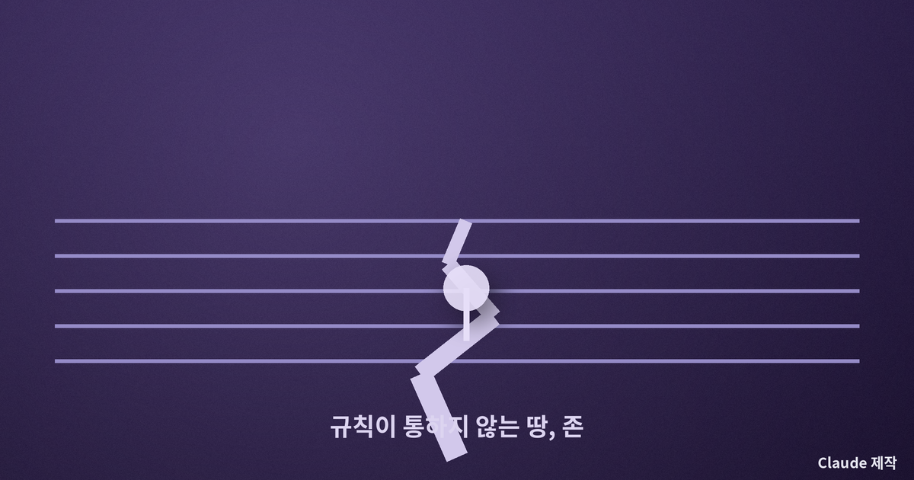
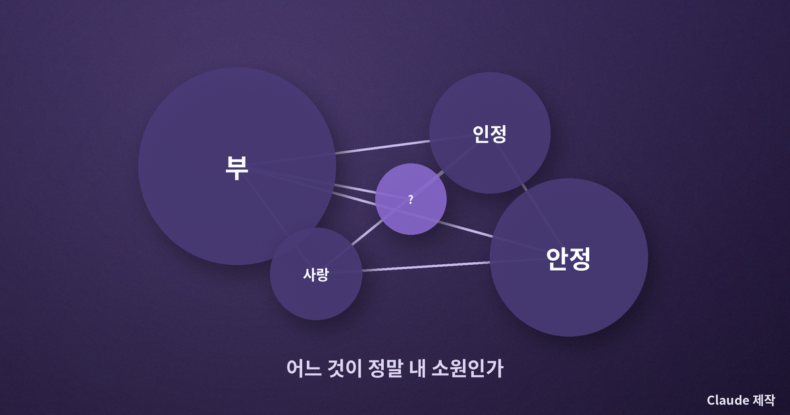
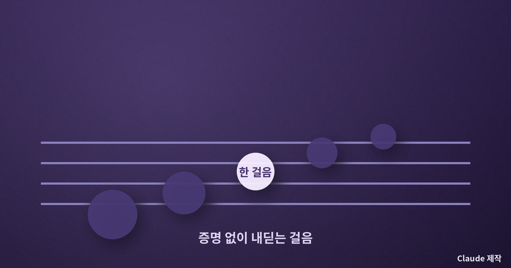
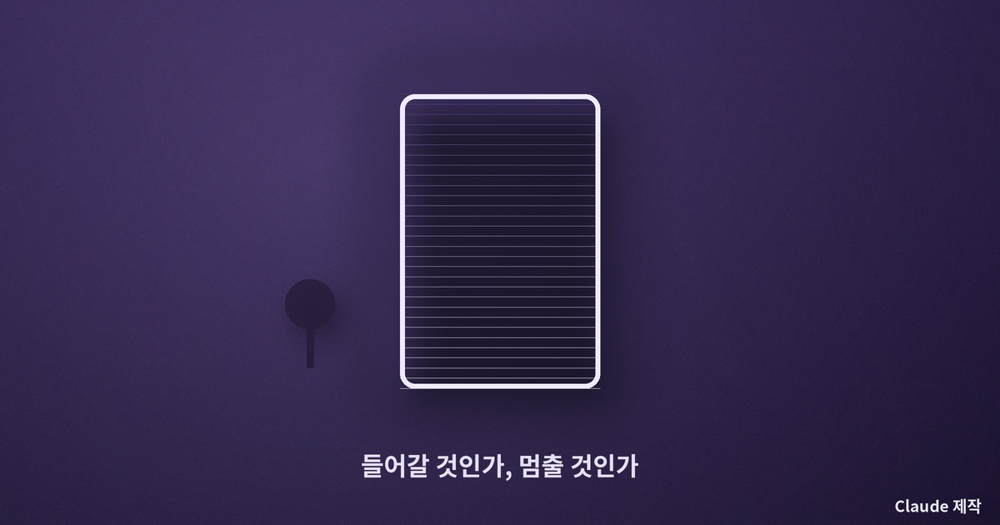

타르콥스키 『스토커』 — 소원을 이루어 주는 방 앞에서, 나는 들어갈 수 있을까
정말 원하는 게 뭐냐고 물었을 때
언젠가 누군가 내게 진짜로 원하는 게 무엇이냐고 물은 적이 있다. 나는 곧바로 답하지 못했다. 좋은 직장, 안정, 인정 같은 단어들이 떠올랐지만, 그것들이 정말 내 소원인지 아니면 남들이 원한다고 배운 것인지 구분이 서지 않았다. 그때 이상하게도 무서웠다. 만약 지금 이 자리에서 가장 깊은 소원이 즉시 이루어진다면, 나는 그 앞에서 발을 들일 수 있을까. 나는 안드레이 타르콥스키의 『스토커』가 바로 그 두려움에 관한 영화라고 생각한다.
이 글은 아직 이 영화를 보지 못한 이들을 위한 관람 전 사유이기도 하다. 줄거리를 다 헤집기보다, 이 영화가 던지는 질문 하나를 함께 들여다보고 싶다. 그 질문은 스크린 밖으로 걸어 나와, 오늘의 내 삶에 곧장 손을 얹는다.
존(Zone)과 방
영화의 무대는 존이라 불리는 금지구역이다. 어떤 사고 이후 봉쇄된 이 땅의 한가운데에는 방이 있고, 그 방에 들어가면 가장 깊은 소원이 이루어진다고 전해진다. 스토커는 그 위험한 길을 안내하는 사람이다. 그는 작가와 과학자, 두 사람을 데리고 존을 통과한다. 존은 겉으로는 버려진 습지와 폐허일 뿐이지만, 규칙이 통하지 않고 지름길이 곧 함정이 되는 곳이다. 타르콥스키는 이 여정을 서두르지 않고, 물과 이끼와 침묵을 오래 비추며 관객을 그 시간 속에 잠기게 한다.
그런데 정작 세 사람이 방 앞에 다다랐을 때, 아무도 선뜻 들어가지 못한다. 여기서 영화는 모험담이기를 그치고, 사람의 마음속을 겨누는 이야기로 바뀐다. 소원을 이루어 준다는 그 방이, 왜 갑자기 세상에서 가장 들어가기 두려운 곳이 되는가.

가장 깊은 소원이 두려운 이유
방의 무서움은 이것이다. 그 방은 내가 말로 비는 소원이 아니라, 마음 가장 밑바닥의 진짜 소원을 이루어 준다. 입으로는 병든 이를 낫게 해 달라고 빌어도, 정작 마음 밑바닥에 부와 인정에 대한 갈망이 더 크게 자리 잡고 있다면 방은 그쪽을 들어준다. 그러니 방 앞에 서는 일은 내가 나 자신을 얼마나 모르는지, 그리고 내 욕망이 얼마나 정직하지 못한지를 마주하는 일이 된다. 사람들이 문턱에서 멈추는 이유는 방을 못 믿어서가 아니라, 자기 자신을 못 믿어서다.
나는 여기서 오래전 어느 사상가가 말한 무질서한 사랑이라는 개념을 떠올린다. 인간의 불행은 원하는 것이 없어서가 아니라, 사소한 것을 크게 원하고 정말 중요한 것을 작게 원하는 순서의 뒤틀림에서 온다는 통찰이다. 방은 그 뒤틀린 순서를 가차 없이 드러내는 거울이다. 그래서 방을 두려워하는 마음은, 사실 내 욕망의 순서가 엉켜 있다는 것을 어렴풋이 알고 있다는 증거이기도 하다.

믿음이라는 태도
스토커는 존을 돈벌이로도, 관광으로도 여기지 않는다. 그에게 존은 믿음이 필요한 곳이다. 증명할 수 없지만 그럼에도 걸어 들어가는 태도, 결과를 손에 쥐지 못한 채 한 걸음을 내딛는 마음. 나는 이 지점에서 또 다른 사상가의 생각을 빌리게 된다. 진리 가운데 어떤 것은 계산으로 도달할 수 없고, 걸어 들어가 보아야만 알 수 있다는 것. 안전이 보장된 뒤에야 움직이려 하면, 정작 중요한 문 앞에서는 영원히 멈춰 서 있게 된다는 것.
작가와 과학자는 각자 냉소와 계산을 무기로 존을 대하지만, 존은 그 무기들을 하나씩 무력하게 만든다. 결국 남는 것은 믿을 것이냐 말 것이냐라는 벌거벗은 선택뿐이다. 타르콥스키는 어느 쪽이 옳다고 손을 들어 주지 않는다. 다만 믿음 없이 사는 삶이 얼마나 메마른지를, 물기 하나 없는 냉소가 얼마나 사람을 지치게 하는지를 조용히 비출 뿐이다.

다시 나의 삶으로
방은 영화 속에만 있지 않다. 우리 각자에게도 문턱이 있다. 오래 미뤄 온 고백, 시작하지 못한 일, 정직하게 마주하기 두려운 관계. 그 앞에서 우리는 소원이 이루어지지 않을까 봐가 아니라, 정말 이루어져서 내 진짜 마음이 드러날까 봐 멈춘다. 나는 『스토커』가 우리에게 방에 들어가라고 등을 떠미는 영화라고는 생각하지 않는다. 오히려 문턱 앞에서 잠시 멈춰, 내가 지금 무엇을 가장 깊이 원하고 있는지를 정직하게 들여다보라고 권하는 영화에 가깝다.

진짜로 원하는 게 무엇이냐는 그 질문에, 나는 지금도 곧바로 답하지 못한다. 다만 이제는 그 머뭇거림이 부끄럽지 않다. 문턱 앞에 서 본 사람만이 자기 욕망의 순서를 다시 세울 기회를 얻는다. 방에 들어가는 용기보다, 문턱 앞에 정직하게 서 보는 용기가 먼저다. 오늘 밤 나는 내 마음속 어느 방 앞에 한 번 서 보기로 한다.